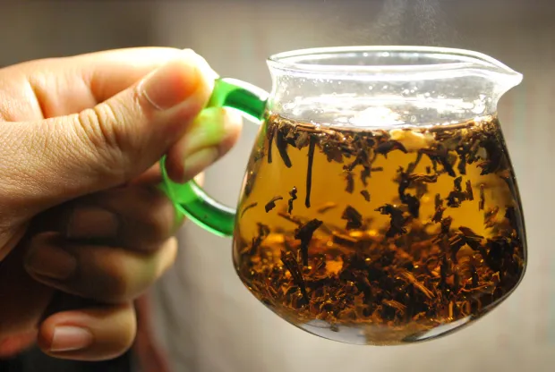
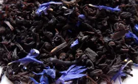
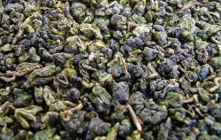
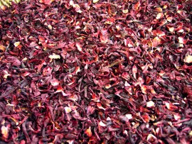
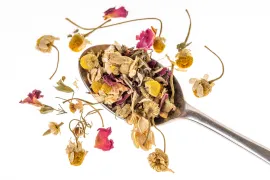

Приготовления чая и кофе имеет давнюю историю. Эти бодрящие напитки издавна использовались целителями для укрепления здоровья и излечения от различных недугов. Мы не советуем вам заменять этими напитками стакан воды, но постараемся разобраться, какую пользу может принести грамотное употребление чая и кофе.
Кофе
Кофейные зерна содержат целый спектр полезных соединений, самым известным и активным из которых является кофеин. Кроме того, кофе обладает целым спектром полезных свойств.
1. Кофе повышает работоспособность, бодрит и улучшает функции мозга
Благодаря высокому содержанию кофеина, он помогает нам в борьбе с усталостью и дает энергию при нехватке отдыха. Одна чашка может содержать от 30 до 300 мг кофеина, но в среднем составляет около 90-100 мг, что делает его наиболее широко потребляемым психоактивным веществом в мире.
Попадая из крови в головной мозг, кофеин блокирует действие тормозного нейромедиатора под названием аденозин, тем самым фактически усиливая активность мозга и увеличивая выработку норадреналина и дофамина. Это снижает усталость и помогает нам чувствовать себя бодрее.
Многие контролируемые испытания на людях показывают, что кофе улучшает различные аспекты функционирования мозга, включая память, внимание, время реакции, а также настроение и общие поведенческие функции.
Однако стоит помнить, что некоторые из этих эффектов, вероятно, будут краткосрочными. Если вы пьете кофе каждый день, то очень быстро ваш организм выработает толерантность к нему, и эффект с каждым днем будет становиться слабее.
2. Кофе ускоряет метаболизм
Кофеин является одним из очень немногих природных веществ, жиросжигающее действие которых действительно было доказано. Некоторые исследования показывают, что кофеин может повысить скорость метаболизма на 3-11%, другие исследования – что кофеин может увеличить сжигание жира на целых 10% у полных людей и на 29% у худых людей.
Под воздействием кофеина нервная система передает сигнал жировым клеткам о необходимости расщеплять жировые запасы, а также стимулирует выброс адреналина в кровь. Адреналин – гормон, подготавливающий наши тела к интенсивной физической нагрузке.
Учитывая эти эффекты, не удивительно, что кофеин может улучшить физическую работоспособность, позволяя нам выполнить больше упражнений на тренировке и потратить больше энергии.
3. Кофе понижает риск возникновения депрессии
Депрессия является серьезным психическим расстройством, которое может надолго вывести вас из колеи.
Согласно материалам Гарвардского университета, опубликованным в 2011 году, женщины, которые пили 4 или более чашек кофе в день, на 20% меньше были подвержены риску возникновения депрессии.
Другое исследование с участием 208 424 лиц установило, что те, кто пьет 4 и более чашек в день, на 53% реже совершают самоубийства.
4. Кофе содержит некоторые витамины и минеральные вещества, имеющиеся в кофейных зернах
По данным министерства сельского хозяйства США, одна чашка кофе содержит:
- 1. рибофлавин (витамин В2): 11% рекомендуемой суточной нормы;
- 2. пантотеновую кислоту (витамин В5): 6% от суточной нормы;
- 3. марганец и калий : 3% от рекомендуемой суточной нормы;
- 4. магний и ниацин (В3): 2% от рекомендуемой суточной нормы.
На данный момент научно обоснованы многие другие полезные действия кофеина на организм человека:
- ⁑ понижает риск возникновения диабета 2 типа;
- ⁑ защищает от болезни Альцгеймера и болезни Паркинсона;
- ⁑ понижает риск раковых заболеваний;
- ⁑ обладает высокой антиоксидантной активностью.
5. Кофеин и беременность
Однозначных исследований, указывающих на негативное влияние кофеина на развитие плода, нет, однако некоторые наблюдения вызывают определенные опасения. Кофеин является липолитиком, т. е. он способен проникать сквозь липидные стенки клеток, а значит, и в плаценту.
Исследования на животных и на людях не выявили явного влияния умеренного потребления кофеина на нормальное развитие плода, преждевременные роды или родовые травмы, но осторожность тут не помешает.
Чай
Чай относится к растениям, богатыми антиоксидантами, которые благотворно влияют на организм человека. Катехины, содержащиеся в чаях, принадлежат к семейству химических веществ, называемых “флавоноиды”, и обладают очень эффективными антиоксидантными свойствами. Концентрация катехинов меняется в зависимости от степени обработки чайных листьев.
Зеленый чай является наименее обработанным, что и объясняет его более высокую антиоксидантную активность в сравнении с другими сортами. Он производится путем быстрого пропаривания только что собранных листьев без длительной ферментации, что обуславливает их мягкость и светлый оттенок. После пропаривания листья сворачиваются и просушиваются горячим воздухом или обжариваются на вок-сковороде. Полученный зеленовато-желтый чай имеет слегка вяжущий вкус, близкий к вкусу свежих листьев.
Наиболее важным компонентом зеленого чая является EGCG — галлат эпигаллокатехина, который давно исследуется как вещество, улучшающее память, помогающее в борьбе с раком и болезнью Альцгеймера. Также он содержит аминокислоту L-теанин, которая проявляет психоактивные свойства: уменьшает воздействие стресса, улучшает когнитивные способности и улучшает настроение, действуя синергично с кофеином.
Черный чай
Чайные листья сначала проходят процесс завяливания, который удаляет около одной трети их влаги и делает их мягкими и гибкими. Следующим этапом обработки является скручивание, при котором разрушаются все ткани чайного листа, выпускаются соки, необходимые для ферментации. Далее листья выдерживают при высокой влажности до приобретения ими темно-медного цвета и характерного вкуса черного чая. Процесс ферментации останавливается сушкой при высокой температуре.
Улун
Производится из частично ферментированных листьев, что делает его промежуточным сортом между зеленым и черным чаем, его вкус, цвет и аромат богаче, чем у зеленого чая, но более тонкие, чем у черного.
Чай каркаде
Изготавливается из цветков суданской розы, обладает кисловатым вкусом и красно-бордовым оттенком. Он обладает почти такой же высокой антиоксидантной активностью, как и зеленый чай, но чаще его упоминают как напиток, полезный при гипертензии.
Действительно, исследования показывают его способность снижать артериальное давление благодаря наличию антоцианов. При употреблении данного чая стоит обратить внимание на высокую кислотность напитка, противопоказанную при гастритах и язвенной болезни.
Травяные чаи
Наиболее часто употребляемым ингредиентом является мята. Исследования на основе фактических данных о биологической активности этого растения показали наличие розмариновой кислоты и нескольких флавоноидов. Основным летучим компонентом эфирного масла является ментол.
Мята обладает значительным противомикробным и противовирусным действием, сильными антиоксидантными и противоопухолевыми свойствами.
Некоторые исследования показывают болеутоляющее, успокоительное и иммуномодулирующее действие мятного отвара, что делает его хорошим вечерним напитком.
К сожалению, недостаток исследований на людях не позволяет однозначно заявлять о защитных свойствах чаев от раковых и сердечно-сосудистых заболеваний, хотя этому есть немало косвенных подтверждений.
Ряд утверждений о том, что употребление зеленого чая улучшает обмен веществ, не полностью обоснован, т. к. имеющиеся в научной литературе данные нередко противоречивы. Одни утверждают, что наблюдают явный эффект снижения веса при употреблении зеленого чая, другие не находят этому подтверждений. Тем не менее, успокаивающий эффект чая не подлежит сомнению. Он также обладает такими потенциально полезными свойствами как антибактериальный эффект и повышение иммунитета.
Ряд исследований показал, что употребление чая во время еды приводит к худшей усвояемости железа из растительных источников. Химические вещества, содержащиеся в чае, связывают ионы железа в кишечнике, делая его недоступным для впитывания организмом.
Пониженная усвояемость наблюдается только в том случае, когда еда запивается чаем или кофе, а чаи, выпитые в промежутках между приемами пищи, не имеют такого эффекта.